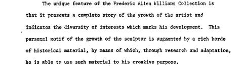
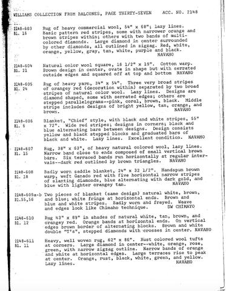
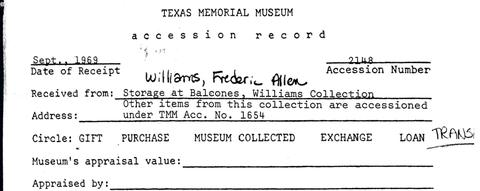
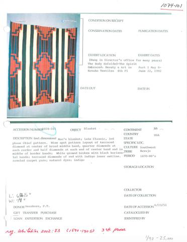
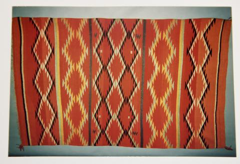
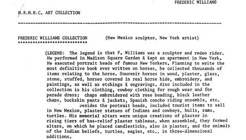
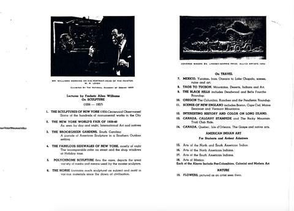

Pathway · Provenance
Provenance
Williams gave the University of Texas his whole collection by a Deed of Trust and kept it during his lifetime. After it reached Austin it was split: the textiles to the Texas Memorial Museum and later the Department of Art and Art History, the photographs and lantern slides to the Harry Ransom Center.
Chain of custody
- 1898-04-10Frederic Allen Williams is born, son of Dr. Frederic Allen and Elizabeth Paine Williams.PR-01 Announcement of Gift p. 3 · West Newton, Massachusetts
- 1922Williams keeps a studio in New York from this year (later at 58 West 57th Street).HRC-4872 lecture brochure · New York
- 1929Williams photographed in Taos modeling "The Sioux Worshipper" sundial.HRC-5186 slide label · Taos, New Mexico
- 1934Slides of Taos women photographed in Bert Phillips's studio and patio; Williams's Maid of Taos and related sculptures draw on these sittings.HRC-5154 slide label; Jesse Ritner introduction · Taos, New Mexico
- 1939Shrine of the Americas copyrighted.HRC-4872 lecture brochure · New York
- 1940Studio portraits: Williams sits on Chief Blanket 2148-606 beside the composite sampler 2148-588 and The Arrowmaker.HRC-5178; HRC-5182; Archives in Conversation · New York
- 1940sWilliams lectures on the "Arts of the Americas" with Kodachrome lantern slides (tenth year of lectures by the time of the brochure).HRC-4850-2; HRC-4853 · New York and touring
- 1948Biography reprinted from "International Who's Who."HRC-4849
- undatedUT Board of Regents accepts a Deed of Trust conveying Williams's entire collection: sculpture, Indian textiles, baskets, pottery and artifacts, the Horse Museum, and books, photographs and lantern slides. Williams keeps possession during his lifetime.PR-01 Announcement of Gift · Austin, Texas
- before 1969Collection held in storage at the Balcones Research Center, where it is catalogued.PR-02 Accession record · Austin, Texas
- about 1966–1968Texas Memorial Museum catalog cards made for the textiles.PR-04 Catalog cards · Austin, Texas
- 1969-09Texas Memorial Museum accessions the collection as Acc. No. 2148 ('Received from: Storage at Balcones, Williams Collection'), accessioned by Mary Carnahan. Other items from the collection are under TMM Acc. No. 1654.PR-02 Accession record · Austin, Texas
- laterTextiles held by the Department of Art and Art History, photographed for the DASe Visual Resources Collection by Steve Bourget and Kimberly L. Jones; some shown on rotating display at the Blanton Museum of Art.Woven into History (2018) · Austin, Texas
- laterWilliams's photographs and lantern slides held by the Harry Ransom Center (Frederic Allen Williams Photograph Collection and Lantern Slide Collection).HRC finding aid · Austin, Texas
- 2018Alina Scott publishes Woven into History; Jesse Ritner publishes Frederic Allen Williams: A Citizen Artist with a Magic Lantern.Project history · University of Texas at Austin
- 2026The two archives are rejoined in this repository.This repository
Start here
Archives in Conversation: Getting the Full Picture
Essay · 2018-04-30Decoding Catalog Cards
Essay · 2018-04-23
Essay · 2018-04-30Decoding Catalog Cards
Essay · 2018-04-23
Accession groups
| Group | What the records say |
|---|---|
| 2148 | Texas Memorial Museum accession of the Williams Collection, received September 1969 from storage at Balcones. |
| 1654 | "Other items from this collection are accessioned under TMM Acc. No. 1654" (accession record). |
| 1074, 1633 | Further textiles from the Williams Collection under separate accession numbers. |
What the record doesn't say yet
- The date of the Deed of Trust and of Williams's death.
- When and why the photographs went to the Ransom Center and the textiles did not.
- Who wove these textiles, and through which traders they reached Williams.
- Catalog cards exist for textiles not yet digitized: 2148-582, 2148-583, 2148-591, 2148-604, 1074-104, 1074-115, 1238-62, 1633-75, 2617-1.
Paper records

PR-01Announcement of GiftDeed of Trust announcement
PR-02Accession Record of Williams CollectionAccession record
PR-03Limited Accession RecordAccession record (excerpt) PR-04Williams Collection: Catalog CardsCatalog cards
PR-04Williams Collection: Catalog CardsCatalog cards
PR-05Binder View: Card CatalogBinder scans
PR-06Photos Among PaperworkAcquisition photographs
PR-07Frederic Allen Williams DescriptionCollection description
PR-08Scans and Misc. NotesClippings, engravings, business cards